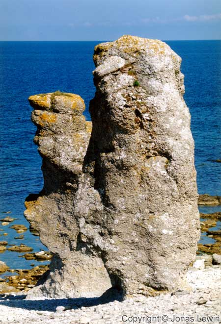
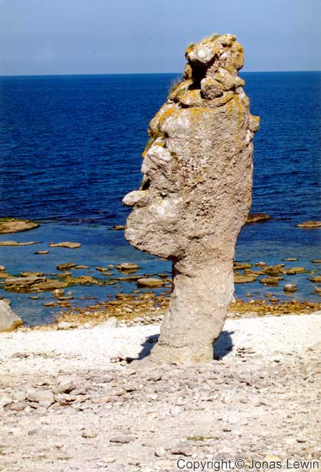
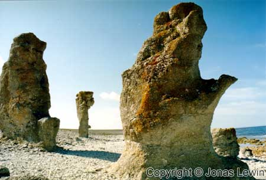
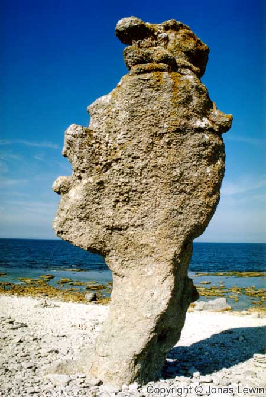
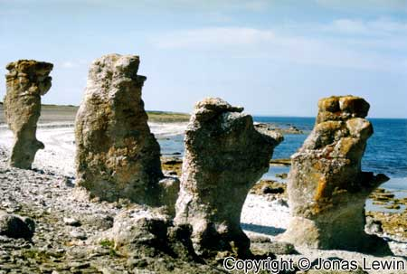
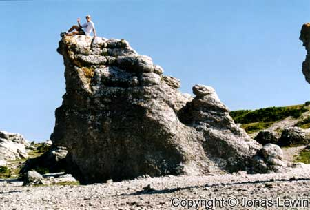
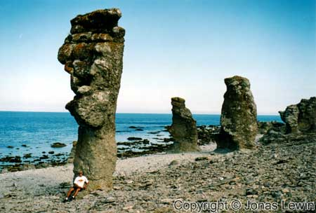

Gotland, Fårö, 2001-08
|        |
|
The east coast of Gotland is supposed to be nice. So I went to Kattvik, and spent
the night. In the morning, I got some more nice weather, and started to explore the east coast. However, I didn't find any thing that was so nice about the east coast. If you want to go swimming, then it could be easier to find some nice places. The beach is nice here, and not so many people here (as I was here off season). My advice to you would be to not waste your time to search for nice places on the east coast. After the disappointment with the east coast, I went to Fårön. I'd heard that there would be nothing to do. So how can I get disappointed with Fårön, If I have this in mind? The rumor I had heard was quite correct. Except for the thing that Gotland is famous for: Raukar. I only found these strange stones here. In the most northern part of Fårö; Which is the same as the most northern part of Gotland. These magnificent stones have a really nice, and strange, look to them. But most of them are not all that special. I've seen much nicer stone formations in Svalbard. But to compare it to the rest of the Swedish beaches, they look astonishing. The ferry between Fårön and the rest of Gotland takes 8 minutes, and leaves every 30-60 minutes. Driving from the ferry to Visby takes around one hour. While driving on the East Coast, I didn't see any car for 30 minutes. Nature wise, the landscape on Gotland looks like a mixture between the 2 Swedish landscapes Skåne and
Småland. Some parts are harvest fields, and many parts are covered with woods and
rocks.
If you are going to Gotland with a motorcycle, I would recommend the north east
parts
(not including Fårö). Stay on the small roads, and you will have some really
nice roads to
drive on. |